CrossEdit: Cross-Modal Training Enables Rich Audio-Visual Editing
An omni-modal editing model for audio, video, and images.
Click any card to jump to examples ↓
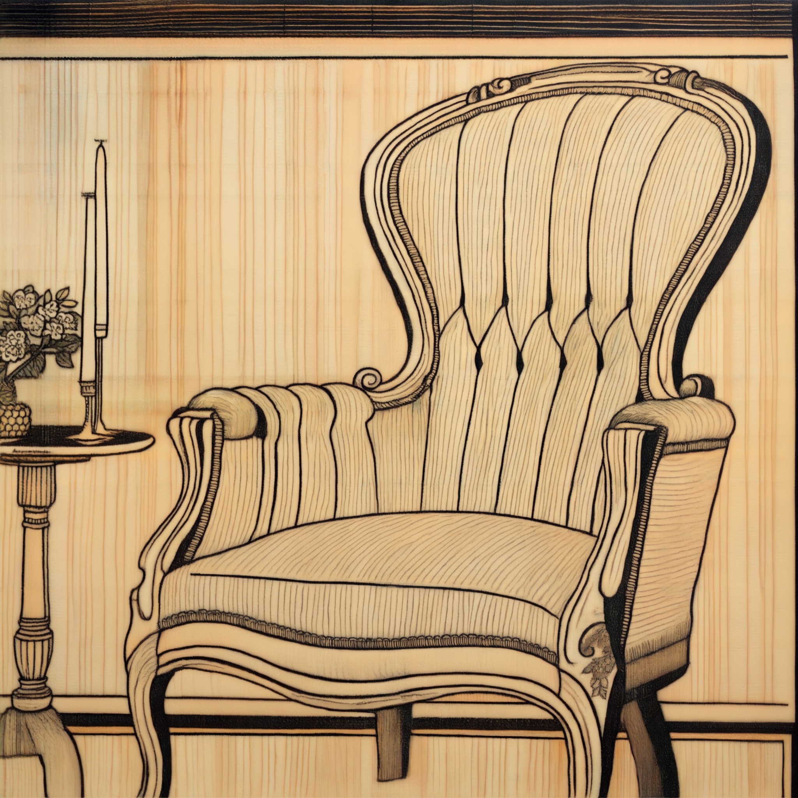
Abstract
Multi-media editing requires generative models to interpret complex, compositional instructions and modify only the desired elements across modalities - a capability that remains largely beyond existing systems. Current approaches are typically limited to simple, single-attribute edits within a single modality, and scaling to richer instructions is bottlenecked by the difficulty of obtaining diverse, high-quality editing pairs, particularly for cross-modal tasks where aligned audiovisual training data is scarce. We present CrossEdit, a unified omni-modal editing model for images, audio, and video that overcomes this limitation through cross-modal transfer. Our key observation is that complex instruction-following, once learned in any modality, can generalize to others. We exploit the additive nature of acoustic signals to procedurally generate large-scale audio editing pairs with compositional instructions, and show that fine-tuning on this synthetic data — alongside a targeted set of curated cross-modal tasks — induces instruction-following capabilities that transfer zero-shot to unseen modality and task compositions. CrossEdit enables entirely new cross-modal capabilities unsupported by existing models, including audio-visual speech editing and audio-visual scene editing, while retaining strong performance on standard image, video, and audio editing benchmarks. We encourage readers to explore CrossEdit's full capabilities here on our demo website.
Audio+Video → Audio+Video: Voice Cloning
Interviews
| Instruction | Input Video | Output Video |
|---|---|---|
| Change the speech to There have been many times we have been doing scenes and I'll be doing all | ||
| Change the speech to So, but she's also a very calm person. She needs to be calm in order to... | ||
| Change the speech to 5% of the world's crops depend on their cooperation. | ||
| Change the speech to 5% of the world's crops depend on their cooperation. | ||
| Change the speech to She was this feisty young woman who spoke her mind | ||
| Change the speech to Its kind of an action, its kind of a comedy | ||
| Change the speech to I've been doing a lot of heavy movies lately | ||
| Change the speech to Twilight and Applejack and Rainbow Dash and Rarity and Fluttershy | ||
| Change the speech to and then I'm like, I gotta, I have to, A, have to do this, |
Movies
| Instruction | Input Video | Output Video |
|---|---|---|
| Change the speech to I could do this all day | ||
| Change the speech to It's over, I have the high ground | ||
| Change the speech to I suspect the squirrel has a tiny wire Watson | ||
| Change the speech to This time for Africa | ||
| Change the speech to I am the one who knocks! |
Cross-lingual (Zero-Shot)
| Instruction | Input Video | Output Video |
|---|---|---|
| Change the speech to Tu sous-estimes mon pouvoir. | ||
| Change the speech to 牛逼啊 |
Audio+Video → Audio+Video: Movie Editing (Zero-Shot)
| Instruction | Input Video | Output Video |
|---|---|---|
| Add a dinosaur roaring | ||
| Make the people's dress more formal. In the audio, change the saxophone to piano | ||
| Replace the magic carpet with a space ship | ||
| Change the man to a dog astronaut | ||
| No visible changes. Remove the dialogue | ||
| Change the scene so that the men are running around the foundation, their breathing is audible | ||
| Add lightning strikes hitting one planet from another, with echoing sounds of thunder | ||
| Ducks quack as they swim across the pond | ||
| Colorize and sound effects to the scene | ||
| Replace the pink ball with a cartoon clown |
Audio-to-Audio: Instruction-based Source Separation
Model input
Remove the music
Remove the dialogue
Extract the dialogue
Extract the sound effects.
Despite being only trained on simulated separation data, the model can generalize to real, complex scenes. In the following demo, we vary the separated sounds throughout the video.
Audio → Audio: Editing
Synthetic Scenes (AudioChat)
| Instruction | Input Audio | Output Audio |
|---|---|---|
| Add the sound of someone panicking | ||
| Remove the door creak | ||
| Let's make the raven sound more ominous. More drawn out, lower pitched. | ||
| I think the footsteps are a little too heavy. Can we make them lighter and softer? | ||
| Add a whispering voice |
Real World Audio (AudioCaps)
| Instruction | Input Audio | Output Audio |
|---|---|---|
| Add the sound of a bird chirping | ||
| Remove the distant kitchen ambience | ||
| Add a low rumbling thunder sound to the background | ||
| Remove the overlapping pan water sound | ||
| Reduce the volume of the dog sounds |
Video → Video: Editing
| Instruction | Input Video | Output Video |
|---|---|---|
| Replace the green bowl with a mystical crystal orb | ||
| Add a magical rainbow in the background | ||
| Transform the entire video to resemble a vivid oil painting, enhancing the textures and brush strokes for a painterly effect | ||
| Add a pair of realistic sunglasses to the man in the video. The sunglasses should be proportionate to his face, with a sleek black frame and dark reflective lenses that subtly mirror the environment. Ensure the glasses follow the natural movement and tilt of his head, with proper perspective and slight shadowing on the face where the frames rest. | ||
| Remove the black car from the video | ||
| Insert a butterfly | ||
| Change the animal that is swimming to a boat | ||
| Make the place where the man stands made by water |
Video + Image to Video
| Instruction | Input Video | Input Image | Output Video |
|---|---|---|---|
| Insert a paper boat in the water | |||
| Insert a car | 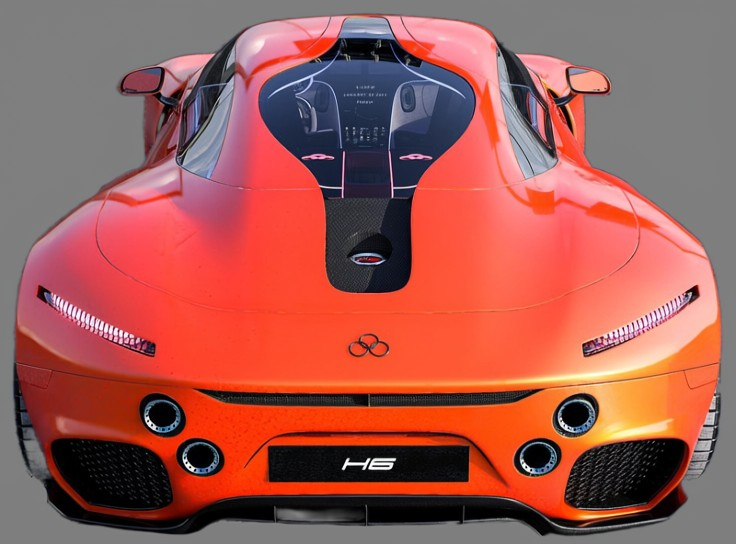 |
Image → Image: Editing
| Instruction | Input Image | Output Image |
|---|---|---|
| Transfer the image into a traditional ukiyo-e woodblock-print style. | ||
| Remove the red trolley (marked \"77\" and labeled \"WEST CHESTER\") from the railway track in the foreground. | ||
| Add a small brown dog sitting inside the open trunk of the antique car. | 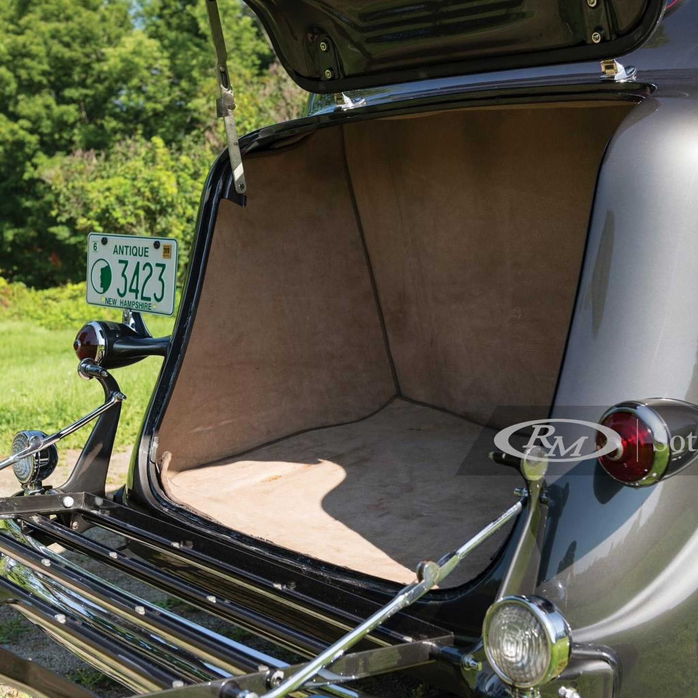 |
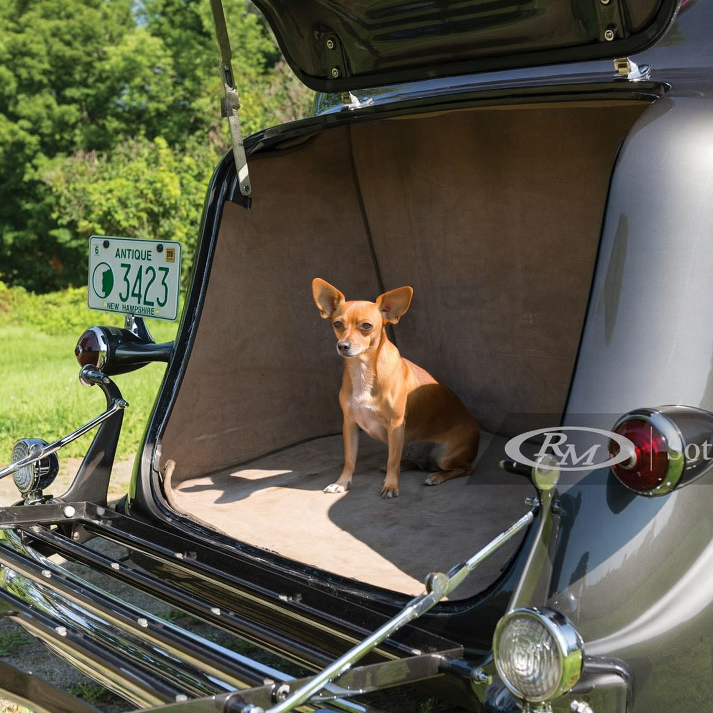 |
| Add a modern skyscraper in the background. | ||
| Change the interior setting in the image from a historic or vintage room to a modern office environment. | ||
| Replace the blue bird in the image with a red fox. | 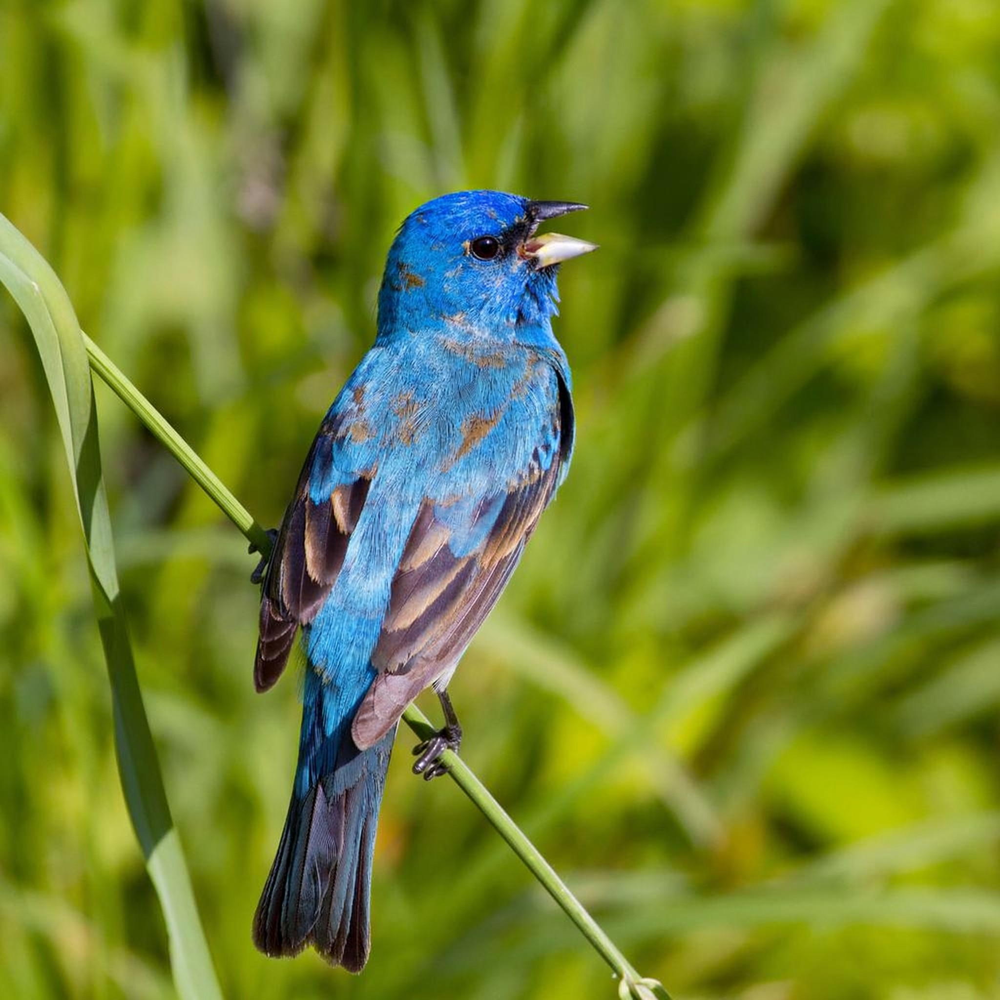 |
Image → Video+Audio
| Instruction | Input Image | Output Video |
|---|---|---|
| Several penguins stand and interact on a snow-covered iceberg while small seals emerge from the nearby water, one sliding partway onto the ice as light snowfall begins around them. | ||
| A small dog riding in a backpack on a seated hiker's back turns its head toward the camera with curiosity and barks twice. | ||
| The camera zooms out from a close view of chickens by a wire fence to reveal a busy pen filled with many chickens moving around and foraging | 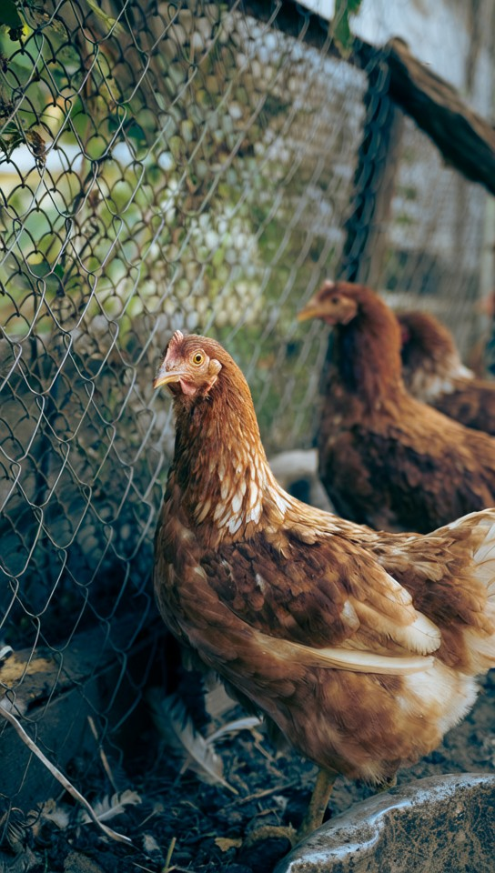 |
|
| Cute little animated characters emerge onto the upper balconies of a pastel row of buildings while additional characters come out from the ground-floor shops below, waving and calling to one another across the street frontage. | 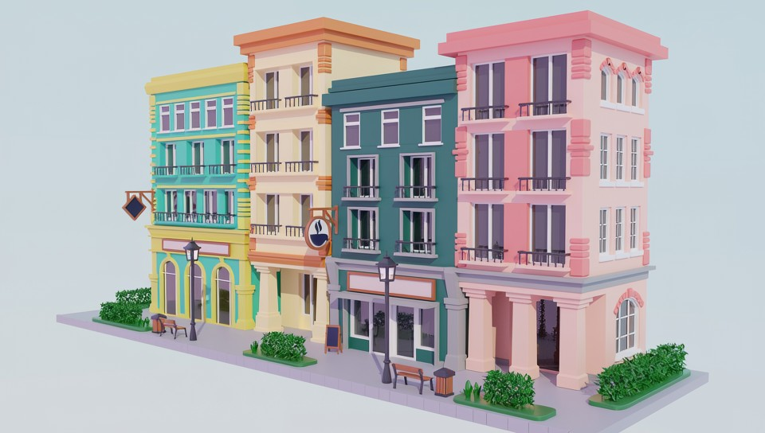 |
|
| A stylized 3D character stands centered against a plain backdrop, waving toward the camera while jumping up and down in place. | 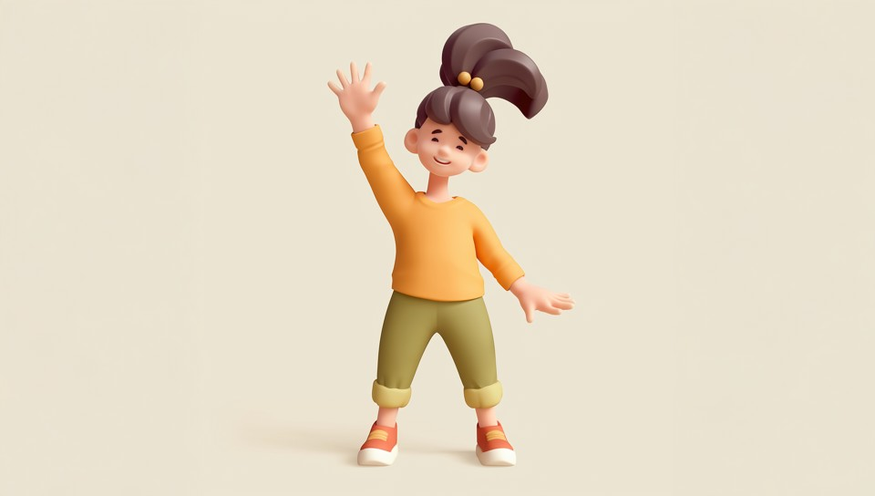 |
|
| A woman stands before a large oval mirror while her reflected self walks deeper away within the mirror, shrinking in the reflected space as she watches. | ||
| A hooded figure at the far end of a dark hallway moves forward toward the camera as the overhead light flickers unevenly. | 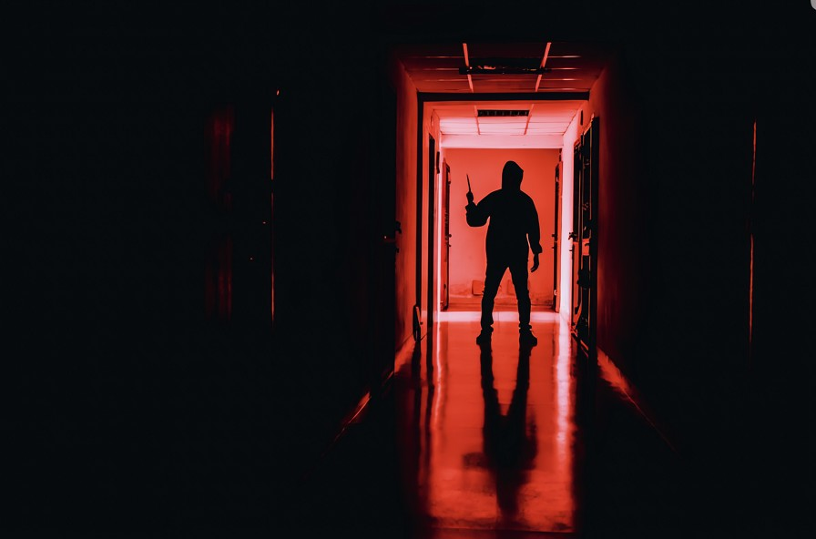 |
|
| Three first responders in orange flight suits roll a patient on a gurney beside a helicopter, coordinating with each other as they prepare to load the patient into the aircraft on the left | 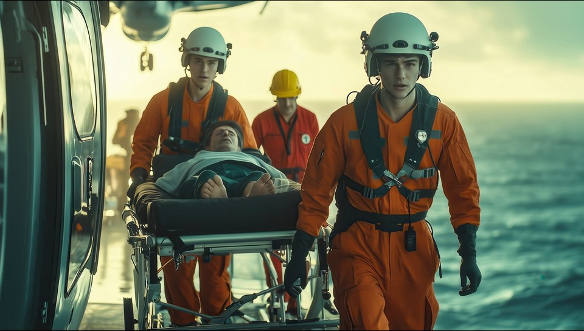 |
|
| An elderly couple walks in from the left into a cozy 3D living room set, sits down in the two armchairs facing the coffee table, and begins chatting together. |
Image+Audio → Video+Audio
| Instruction | Input Image | Input Audio | Output Video |
|---|---|---|---|
| A woman with short, wavy blonde hair and a gentle smile is seated in a director's chair, looking at the camera. She wears a dark grey turtleneck sweater under a black quilted leather jacket. The setting is a dimly lit room, possibly an office or archive, with shelves of boxes and a desk with a typewriter visible in the soft-focus background. The lighting is warm and focused on her, creating an intimate interview-style atmosphere, and the person's lips move in motion with the speech. Audio: The woman speaks enthusiastically about a story, her expression matching her positive tone. |
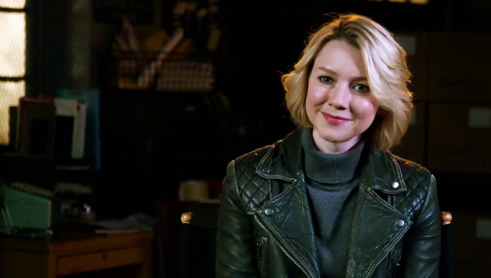 |
||
| A woman with dark wavy hair and a pensive expression sits by the window on a moving train, wearing a dark camisole with lace trim and maroon pants. The seat behind her has a patterned blue fabric, and the lighting is cool and natural. The shot is a medium close-up, and the persons lips move in motion with the speech. Audio: The woman on the train speaks softly, her voice blending with the rhythmic rumble of the train on its tracks. |
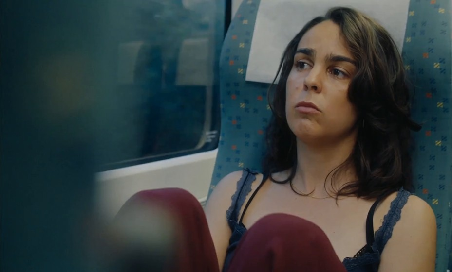 |
||
| A middle-aged man with fair skin and wavy, shoulder-length dark brown hair sits for an interview. He wears a blue short-sleeved button-down shirt open at the collar over a white undershirt. His expression is thoughtful as he looks slightly down and to his left. The setting is an indoor room with soft lighting. In the out-of-focus background, a wooden dresser with a mirror and a vintage metal fan are visible against a neutral-colored wall. The camera is framed in a medium close-up, and the persons lips move in motion with the speech. Audio: The man in the blue shirt speaks in a calm, measured tone, his expression matching the contemplative nature of his words. |
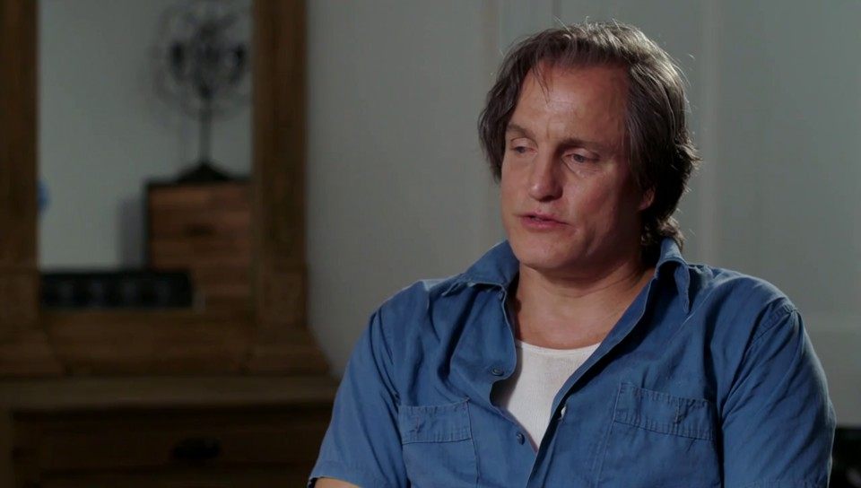 |
||
| A man with short blond hair in a blue sweater stands next to a man in a white chef's coat and another man in a suit holding a Guinness World Records folder. They are in a brightly lit studio in front of a live audience, standing behind a counter with a cutting board, knife, blindfold, and carrots. The blond man is speaking with an animated expression, and his lips move in motion with the speech. Audio: The blond man speaks with an excited, announcer-like voice to the audience about an upcoming world record attempt. |
|||
| A young woman with long brown hair and fair skin is shown in a close-up against a solid black background. She wears a black ribbed short-sleeved shirt. The scene is dramatically lit from one side, casting deep shadows and highlighting her serious expression as she looks slightly off-camera, the persons lips move in motion with the speech. Audio: The woman with long brown hair speaks in a calm and reflective tone, her voice matching the serious and intimate mood created by the low-key lighting. |
|||
| A close-up shot of a young woman with fair skin, dark, styled hair, and dark eyes, sitting in the driver's seat of a car at night. She wears a lavender top and a delicate pearl necklace. The scene is dramatically lit, with her face illuminated while the interior of the car and the background remain in deep shadow. The steering wheel is visible in the foreground. She looks off to her right with a thoughtful and slightly wistful expression, and the person's lips move in motion with the speech. Audio: The woman in the lavender top speaks with a clear, slightly melancholic tone, her voice accompanied by faint, dramatic orchestral music. |
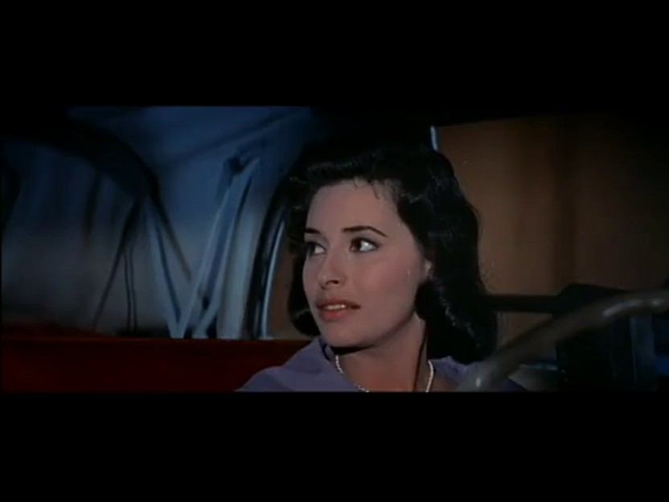 |
||
| A man with dark skin, in his late 20s or early 30s, is shown in a medium close-up shot. He has short, textured black hair with faded sides, a neat goatee, and a small silver hoop earring in his left ear. He wears a thick, silver-colored chain necklace and a light blue, short-sleeved button-up shirt with a faint white pattern. He is speaking with an engaged expression, his mouth slightly open, and the person's lips move in motion with the speech. The background is a softly lit, out-of-focus room with neutral-colored walls and a blurry abstract painting with blue and orange tones. Audio: The man speaks conversationally, recounting a story from inside the room. |
|||
| A young woman with fair skin, dark hair, and a bruise on her cheek lies on a couch, propped up by a yellow and white patterned pillow. She wears a white cervical neck brace and a light-colored camisole, her expression weary and pained. One hand with black nail polish rests on her chest while the other touches the brace. The room is dimly lit, with a patterned couch and a small end table visible in the background. The back of another person's head is out of focus in the foreground, and the person's lips move in motion with the speech. Audio: The injured woman on the couch speaks in a weak, shaky voice, her tone conveying fear and exhaustion. |
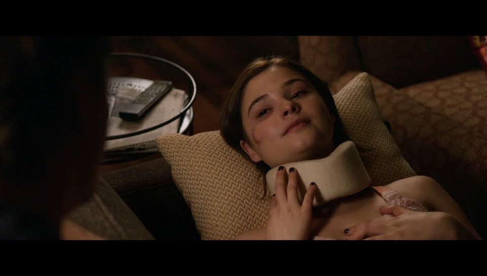 |
||
| Several people in yellow jumpsuits walk through an institutional corridor with dark vertical panels on the walls. A person with short brown hair is seen in profile, walking with a determined look. In the background, a man in a white shirt and tie moves past, while the heads of other individuals are visible in the blurry foreground. The scene is dimly lit, creating a tense and serious atmosphere. Audio: Tense, rhythmic, and percussive music underscores the scene, mixed with the sound of shuffling footsteps as the group moves forward. | 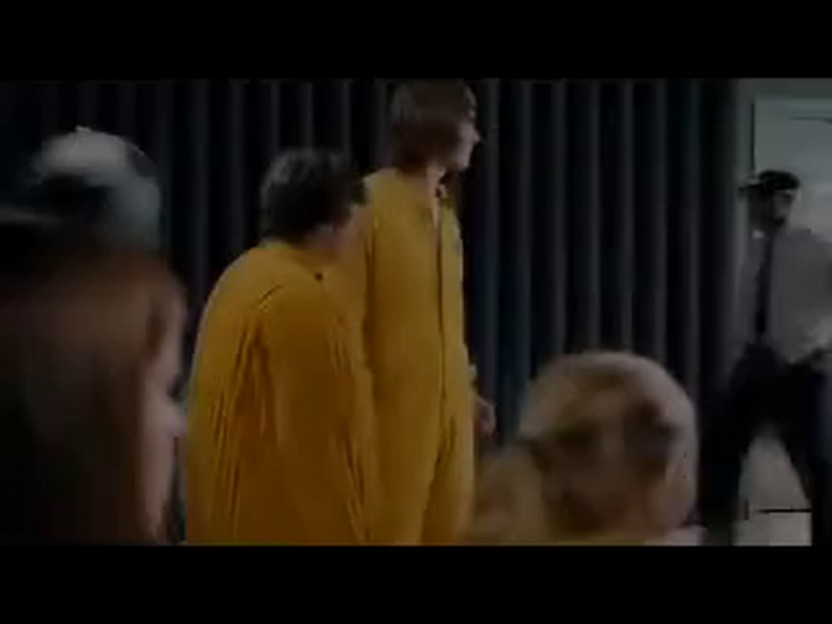 |
||
| Three men stand outdoors by a railing in a gritty, industrial setting with steel girders in the background. The man on the right, wearing a dark fedora and overcoat, holds a paper cup and speaks. In the center, a man in a dark three-piece suit and patterned tie listens, while the man on the left, in a dark coat with the collar up, looks on seriously, holding a cup and a metal lunch pail. The scene has a vintage 1970s film aesthetic. The man in the fedora's lips move in motion with the speech. Audio: The man in the fedora speaks in a serious, conspiratorial tone in French, as his two companions listen in the industrial environment. |
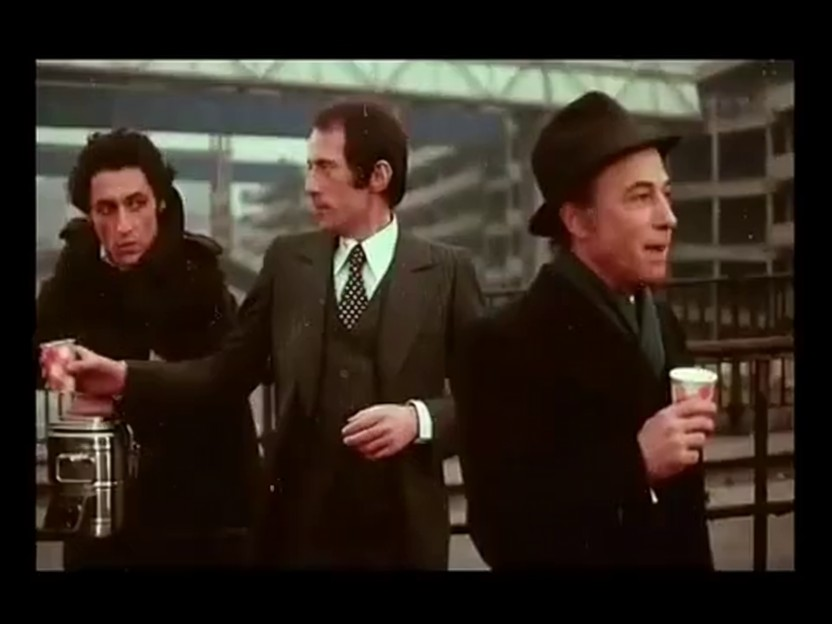 |
||
| At night, a woman with blonde hair, wearing a light-colored top and shorts, runs across a dirt yard while holding a rifle. She is in front of a large, two-story white house with overgrown vines. A motorcycle is parked nearby, next to a large corrugated metal water tank. In the background, a bald man in a light shirt emerges from behind the building. The scene is dimly lit, creating a tense and suspenseful atmosphere under a dark night sky. Audio: The sound of footsteps on gravel is heard as the woman runs, followed by the loud, sharp report of a gunshot. | 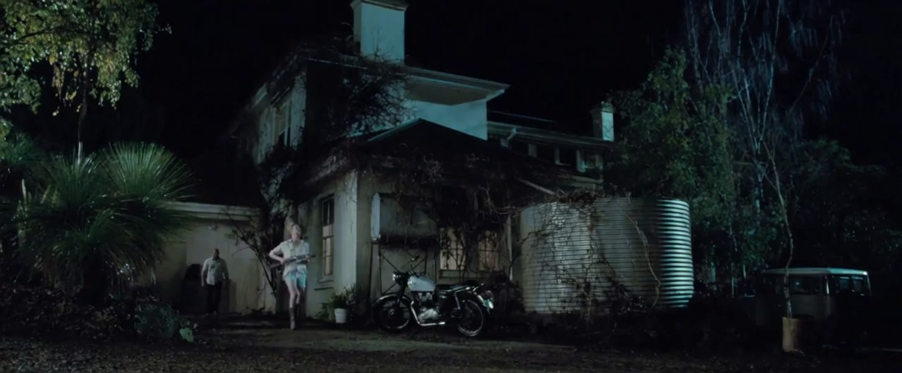 |
||
| An East Asian man with short dark hair, wearing a black leather jacket with a red collar over a graphic t-shirt, sits in a chair in a futuristic control room. He is framed in a medium shot, leaning forward with his hands clasped as he speaks. The background is filled with complex electronic equipment, including monitors and a large, glowing blue panel with intricate geometric patterns, and the person's lips move in motion with the speech. Audio: The man in the black leather jacket speaks in a calm, thoughtful tone while sitting in the high-tech room. |
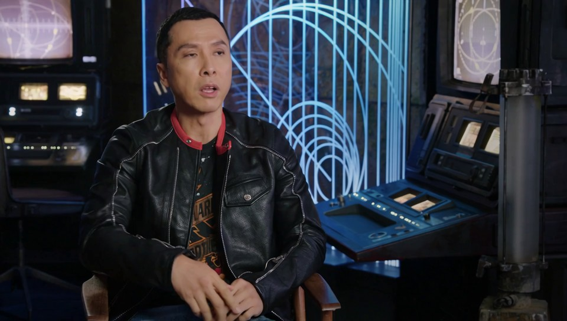 |
BibTeX
@article{YourPaperKey2024,
title={Your Paper Title Here},
author={First Author and Second Author and Third Author},
journal={Conference/Journal Name},
year={2024},
url={https://your-domain.com/your-project-page}
}